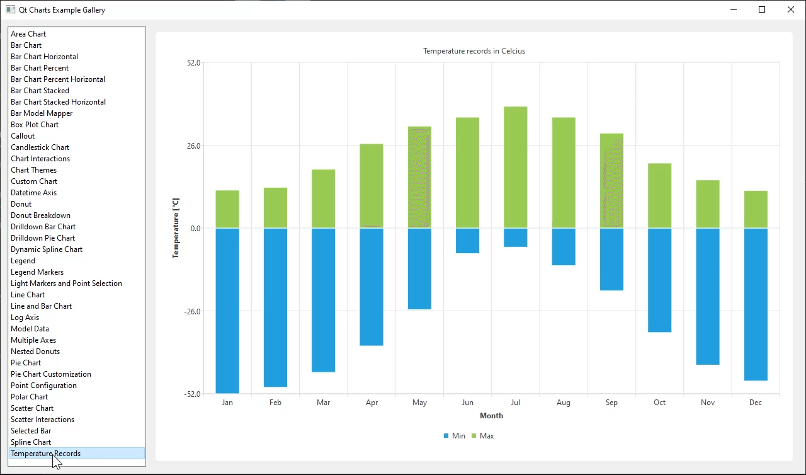

Charts with Widgets Gallery
An application that demonstrates the Qt Charts Widgets API.

This example demonstrates the Qt Charts API for widgets by using included sample data to populate a number of chart types and interactions for a user.
Shows how to use a selection feature for the bar chart. | |
Shows how to combine different charts and set the axes. | |
Shows how to create a simple area chart. | |
BarChart shows the data in sets as separate bars within categories. | |
Shows how to create a box-and-whiskers chart. | |
Shows how to create a candlestick chart. | |
Shows the look and feel of the different built-in themes. | |
Shows how to create a horizontal bar chart. | |
Shows how to create a simple horizontal percent bar chart. | |
Shows how to create a simple stacked horizontal bar chart. | |
Shows how to create a simple line chart. | |
Shows how to create a nested donut chart using the QPieSeries API. | |
Shows how to create a simple percent bar chart. | |
Shows how to create a simple polar chart with multiple different series. | |
The example shows how to create a simple scatter chart. | |
Shows how to create a simple stacked bar chart. | |
Shows how to create a donut breakdown chart. | |
Shows how to customize the appearance of chart elements. | |
Shows how to detach the legend from the chart and attach it back. | |
Shows how to create a bar chart with negative bars. | |
Shows how to draw an additional element (a callout) on top of a chart. | |
Shows how to implement drilldown using a stacked barchart. | |
Shows how to use QLineChart with QDateTimeAxis. | |
Shows how to modify the configuration of individual points. | |
Shows how to use QAbstractItemModel derived model as the data for a bar series. | |
Shows how to make use of legend markers. | |
Shows how to use light markers and points selection for a series. | |
Shows how to use QLogValueAxis. | |
Shows how to use the QAbstractItemModel derived model as series data. | |
Shows how to create a chart with a vertical axis for each series. |
Running the Example
To run the example from Qt Creator, open the Welcome mode and select the example from Examples. For more information, visit Building and Running an Example.
If you want to implement charts with QML see the Charts with QML Gallery.